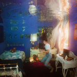

The 50 Best Albums of 2019
So this is it! It's time to reveal our top albums of the year. A longstanding tradition since 2002, our full list consists of 50 albums selected by the entire No Ripcord staff.
...
50. Bruce Springsteen
Western Stars
(Columbia)
Bruce Springsteen spun tales of imagined youth in his earliest albums, as nostalgically documented in last year's Tony Award-winning Springsteen on Broadway. The Boss's latest eschews youth, however, in favor of aging. Western Stars brims with Nashville-style orchestration reminiscent of Glen Campbell's work, which gives Springsteen the canvas to allow moments of grace and dignity to those reaching the sunset of their lives. The lyrics are broad, pared-down, and inflected with his familiar, weathered drawl. Across thirteen songs, Springsteen not only reflects on aging, but acts as a witness to the extinction of American archetypes like the hitchhiker, the wayfarer, the stuntman, and western movie stars. The romanticism might not exactly be political, but he offers one better—a positive reflection on coping with loss. - Kirk Sever
49. Foals
Everything Not Saved Will Be Lost - Part 2
(Warner Bros.)
While Everything Not Saved Will Be Lost – Part 1 highlights Foals’ experimental, kitchen sink approach to songwriting, Part 2 shows their talent for sheer rock ‘n’ roll bangers. Their second album of 2019 is chock-full of some of the heaviest, catchiest guitar riffs in the band’s catalog. On The Runner and Black Bull, the band burns forward with the force of a jet engine. With environmental destruction in the air, the group makes songs of action that turn fear into motivation. Even when things slow down, tracks like 10,000 Feet and the space-prog closer Neptune reach mountainous swells that feel all-encompassing. The consistently great songwriting keeps up a pulse-quickening power from beginning to end. Whether you are a longtime Foals fan or new to the band, this album will scratch an itch you didn’t even know you had. - Joe Marvilli
48. Dave
Psychodrama
(Neighborhood Recordings)
Could the name of a rap act be more ordinary? For Dave, his name fits the directness and honesty of his message. Instead of charting an ego-maniacal fantasy like others I won't name, Dave lets his humanity guide him, exposing his pride, his anger, and most importantly, his insecurities. Guided by his own production and prodigious piano-work, Psychodrama is streaked with bewilderment and melancholy, particularly as those feelings relate to issues of racism, domestic abuse, and mental illness. Dave's inherent musicality is most prominent in his delivery, a deceptively spontaneous flow of on-point lyrics that rarely get heavy-handed. Only twenty years old when he recorded this Mercury Prize-winning album, here's hoping for Dave's ascent. - Kirk Sever
47. Cate Le Bon
Reward
(Mexican Summer)
Twenty nineteen has been a most fruitful year for Welsh singer-songwriter Cate Le Bon, who not only co-produced Deerhunter's latest album in January and released her fifth proper solo album Reward in May, but also dropped a Marfa Myths collaboration with Bradford Cox in November. Collectively, these projects have evinced and exalted her uniquely offbeat neo-psychedelic sensibility that pulls as much from Durutti Column as Split Enz and Broadcast. While less frenetic, angular, and guitar-oriented than 2016's Crab Day, the more ruminative and subdued Reward is still an unorthodox pop album that boasts an equal sense of the Dadaist in its lyricism and deadpan vocals, frequent bell-like instrumental palette, and dreamy production luster that flirts with the avant-garde. One of the album's many standouts, Mother's Mother's Magazines, wonderfully intermingles a groovy post-punk bass lick with chiming guitar, soft piano phrases, buzzing electronics, and an extended two-minute outro that features a simple, yet mesmerizing interplay of loopy, parping saxophones. - Grant Phipps
46. 100 gecs
1000 gecs
(Dog Show Records)
To any sane person, 1000 Gecs may sound like absolute mayhem. Good on them, because the debut album from 100 Gecs is chaotic in the best way. From the auto-tuned vocals, to the distorted, punchy instrumentation, there’s something futuristic and garage-y in the way everything comes across. It’s the scariest and strangest experimental pop album of the year, but there’s something exhilarating about the souped-up ska-influence on stupid horse, or the surprisingly stripped-down and slightly wistful ringtone. No matter what, it’s insane that a song with the copypasta-esque opening line “Hey, you lil’ piss baby” is only the second-best song off this album. - Ethan Gordon
45. Charli XCX
Charli
(Asylum/Atlantic)
Always a restless presence and constant collaborator, Charli XCX spent 2019 dropping killer tracks seemingly every week yet somehow found time to manage a band (Nasty Cherry) and star in a multi-part Netflix documentary about their launch. She also released Charli, her third album, which features contributions from pretty much everyone who’s doing interesting things with pop music right now. Pop 2’s Track 10 was reworked with Lizzo to create Blame It On Your Love, Christine and the Queens crop up on Gone, and Troye Sivan matches Charli blow for blow on nostalgia jam 1999. Most astonishing, though, is Shake It, which features a coterie of MCs and sounds that have been put through every filter and effect ever created. Want to know what a pop/rap crossover recorded at the bottom of the sea would sound like? Charli delivers. - Joe Rivers
44. Mikal Cronin
Seeker
(Merge)
Mikal Cronin’s 2013 masterpiece MCII is a truly special album to me. I was besotted with its immaculately constructed power-pop at the time my second son was born, and listening to it (as I regularly do) instantly transports me back to those magically exhausting days. It is a musical landmark in my life, which makes it hard to judge with true objectivity. I’m fairly confident that it’s absolutely amazing, though. MCIII sadly passed me by (the joys of parenthood), but Seeker offered another opportunity to touch base with Cronin. Understandably, I didn’t connect with Seeker in the same way as MCII, but it is a compelling listen, which shows Cronin’s remarkable ability to reinvent himself and expand his palette. There’s a nod to classic singer-songwriter fare—I was reminded of Neil Young’s wonderful On The Beach throughout—but the power-pop heart remains. If Seeker passed you by, or if you never got around to MCII, give Mikal Cronin a few hours of your time. You won’t regret it. - David Coleman
43. Faye Webster
Atlanta Millionaires Club
(Secretly Canadian)
Webster’s Atlanta Millionaires Club comes on like the summer head cold that takes forever to shake: Just woozy enough to still go to work, but better to phone in sick and simmer in your sorrows. The album starts innocuously as it were, but before you know it, your brain’s in a spin for a loosely wound close. It ranges from full-blown country weepers (What Used To Be Mine) to jaunty R&B (Come To Atlanta), all steeped in an intoxicating brew of Webster’s just short of a drawl and Lambchop-esque pedal steel. Webster keeps things blissfully awkward throughout to make this club one you may disclaim being a member of, but find yourself sneaking back to repeatedly for just another little nip. - Mark Moody
 42. black midi
42. black midi
Schlagenheim
(Rough Trade)
London four-piece Black Midi are a bit of an outlier, not too dissimilar to a moon orbiting the sphere of rock music, exposing themselves in a range of different lights in any given cycle. Their debut LP Schlagenheim dropped as a breakneck, clattering mess, capable of both a ruthless lack of mercy and a surprising string of compassion. For the band, songwriting is seen as a mixture of noise, riffs, and immaculate musical dexterity and agility. As a result, there are parts of Schlagenheim that make it a challenging listen, with its relentless surges of white-knuckle noise so barbarous it can be difficult to keep strapped in. However, its surgical intricacies – sometimes vigorous but always nimble – are incessant in their ability to pull you back from the brink. - Carl Purvis
41. Oso Oso
basking in the glow
(Triple Crown Records)
Jade Lilitri’s third album as Oso Oso is the first one that arrives with any pressure and anticipation, but luckily proves to be more of the same. This album bounces and breezes from chorus to chorus, hanging onto every moment of joy—however fleeting. Written following 2017’s breakout The Yunahon Mixtape, songs like One Sick Plan and The View are affirmations to get through any of the self-doubt and cynicism that followed. But even without inspecting the lyrics, it’d be difficult for emo fans to resist humming along to the impressively sharp melodies that run throughout the album. “I got a glimpse of this feeling, I’m trying to stay in that lane,” Lilitri sings on highlight Impossible Game, undoubtedly more than a few steps in the right direction. - Matthew Smith
 40. Billie Eilish
40. Billie Eilish
WHEN WE ALL FALL ASLEEP, WHERE DO WE GO?
(Interscope)
Sometimes it seems Billie Eilish has been genetically engineered to appeal to apathetic teenagers taking their first, tentative steps into the counterculture. Sure, she’s the personification of a sarcastic eye roll, but on her debut album, WHEN WE ALL FALL ASLEEP..., she genuinely took pop music in a new direction. It was a brave direction, too. Rarely has such a popular artist created something so sparse and spacious. Bad guy, a ginormo-hit, is little more than whispered vocals, punchy bass, a simple yet spooky hook, and finger clicks. But it’s the attention to detail in the production, which tips a nod to ASMR (listen to the sharpness of those finger clicks but also notice how they’re very slightly off the beat), that creates something that gets truly under your skin. - Joe Rivers
39. Sudan Archives
Athena
(Stones Throw)
Following two EP's of idiosyncratic and difficult-to-pin-down music, L.A. based singer and self-taught violinist Brittney Parks has taken major strides on her truly impressive debut, Athena. Her music retains its adventurous, playful spirit (Black Vivaldi Sonata and Glorious tinker with gleefully unconventional arrangements) and her skill as a violinist dominates (Down On Me and Confessions). Just as thrilling is how the bold Icelandic Moss, the slow-burning Down On Me, and the humid and sensual Green Eyes demonstrate how capable she is of writing seriously catchy pop songs without sacrificing her own unique approach to creating music. - Jeremy Monroe
38. Jenny Hval
The Practice of Love
(Sacred Bones)
In The Practice Of Love, subversive Scandinavian artist Jenny Hval leans into the synth and sophisti-pop accessibility that subtly inhabited her two prior releases while earnestly preserving her entrancing performance art's confessional dimensions. It comes by way of the album's title track, which features guest Vivian Wang's rehearsed, cinematic monologue interlacing with a conversation between Hval and Laura Jean Englebert on the subject of self-actualization and individuality in a society governed by parenthood and procreation. Coupled with Hval's songwriting talent for fusing more rigid pop song structures with spaciously ambient-electronic aesthetics, it's an altogether daring juxtaposition. Lead single Ashes To Ashes smolders with the creative spirit of David Bowie, meditating on personae and dreams in complementing Hval's penchant for wordplay and self-reference. The Practice Of Love may be her most uniform album to date in terms of dynamics, but deep cuts like Six Red Cannas, with its morphing dance rhythms, expose Hval's brilliance for lifting the veil behind the past and present artistic process. - Grant Phipps
37. American Football
American Football (LP 3)
(Polyvinyl)
The tempting narrative with American Football (LP3) is that this is the moment where American Football, now elder statesmen of emo, bid farewell to the genre they pioneered decades ago and aim for something more mature. And while LP3, with its high-fidelity polish, open vistas and penchant for marimbas sounds nothing like emo, the album is still very much the product of Kinsella & crew. Much of what made them special from the start—chiming guitars, somber vocals, an appreciation for empty space—is ever-present. But by softening the edges and lifting their sound to the stratosphere, American Football reimagine themselves as a dreamy, contemplative art-rock outfit with the help of a few fellow legends like Rachel Goswell and Hayley Williams. Though not necessarily their comeback album, LP3 is proof that legacies can be both time-honored and transcended without compromise. - Peter Quinton
36. Marika Hackman
Any Human Friend
(Sub Pop)
In spite of a few quieter moments, Hackman’s latest album comes on all brash and ballsy. Filled with 80’s synths and buzzy guitars, Any Human Friend finds Hackman exploring all manner of relationships, but rarely are they platonic. Whether busting gender tropes on the one, getting hot and bothered on all night, or being left to her own devices on hand solo, Hackman keeps the hooks rolling and her tongue sometimes in her cheek. Sexual frustration has never sounded this much fun. Of all the acts in 2019 that reached back for the retro big pop sound, Hackman did it best while maintaining her dignity and more than a touch of modernity. All that with one hand free. - Mark Moody
35. Nilüfer Yanya
Miss Universe
(ATO Records)
One of 2019s best debut albums, Miss Universe is tantalizing in its ability to disguise its sentiment. Nilufer Yanya’s execution of melody gives her songwriting a stylish pop sensibility, but it’s her lightning rod-like aptitude of controlling and manipulating the album’s mood that puts her in a league of her own. It’s a concept album, with regular visits to WWAY HEALTH—Yanya’s satirical and topical one-stop health shop— punctuating the album's sumptuous progression. The result is that it all feels extremely personal and truly original. It would be rude not to mention the album’s first ‘proper’ track In Your Head, one of the year’s very best songs, where Yanya uses her distorted guitars to provide plush hooks for her urgent musings to hide behind. - Carl Purvis
34. Pharmakon
Devour
(Sacred Bones)
A nightmarish howl of frustration at being trapped in a collapsing system with seemingly no chance of escape: Devour could feasibly be the soundtrack to many of our 2019s. A veteran of New York’s noise scene for more than a decade now, Margaret Chardiet’s work as Pharmakon has never exactly been easy listening, but this was her at her most cohesively claustrophobic. Recorded live in the studio, Devour’s two side-long bursts of unease, fear, and utter grinding dread may have sounded on first (second, third…) listen like impenetrable improvisations, but the level of discipline in their gradual patterns of restraint and release gave more adventurous listeners plenty of rewards worth coming back to discover. - Mark Davison
33. Tyler, the Creator
Igor
(A Boy is a Gun/Columbia)
At this point, Tyler is almost unrecognizable from the mouthy Odd Future kid—and not only thanks to the presence of a dashing new blond wig. In IGOR, Tyler continues where he left off from Flower Boy, rapping less than ever and instead focusing on storytelling over a gorgeous balance of R&B and funk. It’s also the most vulnerable he's ever been on an album, describing the fallout from being cast-off from a love triangle. But, of course, he hasn’t just produced a wallowing breakup album—from Earfquake and A Boy is a Gun to Are We Still Friends, this is an album that doesn’t worry about borrowing ideas; even if there’s still nothing like it. - Matthew Smith
32. Self Esteem
Compliments
(Fiction Records)
One could be forgiven for thinking that Self Esteem, the brainchild of artist Rebecca Taylor (of Slow Club fame), is not a solo effort but at least a Destiny's Child-worth of women, if not more. Indeed, the vocal hallmark of Compliments Please is the close layered harmonies so emblematic of R&B girl groups come and gone. To this, Taylor folds in orchestral and hip hop elements to rival Kanye West. In fact, the autotune, choral elements, and crisp piano on In Time may be a bit too on the nose when it comes to Kanye inspiration. But where his bombast is utterly lacking in self-awareness, Taylor came by her confidence honestly: “What I might have achieved, if I wasn’t trying to please.” As a platform for developing a sense of self in young womanhood through faithfully reimagined R&B/pop hybrid jams, Compliments Please is refreshing in concept and form. - Gabbie
31. Bat for Lashes
Lost Girls
(AWAL Recordings)
There's no concept that Natasha Khan is unable to tackle. And in Lost Girls, her fifth album with Bat for Lashes, she creates a female heroine ("Nikki Pink") who undergoes a search for her identity over synth-driven songs fit for '80's sci-fi and fantasy films—it makes even more sense knowing that the London multi-instrumentalist moved to Los Angeles to focus on screenwriting and scoring films. Khan remains faithful to her sources of inspiration, from Tim Capello's sax work in the Lost Boys score (Vampires) to the chintzy, atmospheric soundscapes of John Carpenter (Jasmine). It doesn't stray too far from the gothic overtones that always surround her work, though this time, they're textured with a new-wave flavor—the icy, romantic ballad Safe Tonight, for example, evokes the sultry, melodramatic bounce of Eurythmics. Even if Lost Girls often sounds like scrapped ideas taken from a larger project, Khan doesn't go too deep into nostalgia—still working firmly within a pop framework. - Juan Edgardo Rodríguez
30. Mannequin Pussy
Patience
(Epitaph)
The consistent, propulsive anger on Mannequin Pussy’s superb new album, Patience, starts almost immediately. With a chugging guitar riff and punchy drumming, the title track explodes with the words “Who told you that my body was yours to own?” It’s a mic-dropping statement, and yet, the album only grows in anger and sadness. With the mellow but heartbreaking Fear / Desire, lead singer Marisa Dabice fills in the details of an abusive relationship. It’s cathartic when she screams “What did you say to me boy?” but it manages to have a happy ending. Dabice closes the album in love again, ready to give someone else another try, which is both nerve-wracking and exciting in equally fun measures. - Ethan Gordon
29. Freddie Gibbs / Madlib
Bandana
(Keep Cool/RCA Records)
In the five years since Piñata, the iconic collaboration between rapper Freddie Gibbs and producer Madlib, not much has really changed for either of the two. Both are reliably great at what they do - Gibbs has dropped a handful of solid albums while Madlib popped up here and there, but neither of them had done anything earth-shattering. Which is why Bandana is both exactly what you’d want from the duo and a bit of a surprise. As soon as the awkward, soulful beat of Freestyle S**t starts up, you feel like you’re coming back to a style and artist you know well. Thankfully, Bandana is so much more than a continuation of Piñata. With features from some of the best artists currently working (Pusha T, Anderson .Paak), and an even further commitment to what makes both Gibbs and Madlib great, their return to each other feels more welcome than ever before. - Ethan Gordon
28. Wilco
Ode to Joy
(dBpm Records)
In the past decade, it felt like Wilco experimented without too much forethought. Ode to Joy, the alt-rock veterans' 11th album, confines the spontaneous impulses of strange bedfellows Star Wars and Schmilco to something less broad and more measured. Motivated by the very idea of feeling unmotivated, frontman Jeff Tweedy tackles the malaise of the everyday head-on and with a clear mind. Songs like Before Us and Quiet Amplifier sound stripped-back yet detailed, where Tweedy attempts to find new ways to connect with his listeners in a rare moment of self-awareness—especially to those he feels may doubt his band's longevity. Tweedy and his cohorts often reduce any semblance of noise to a lull, like on White Wooden Cross, where they essentially pluck their guitars over a pitter-patter drum beat. There's a subtle power to Wilco's moody subject matter, reminding us that there's always an opportunity to thrive in the places we least expect. - Juan Edgardo Rodríguez
27. Floating Points
Crush
(Ninja Tune)
I can think of only a handful of modern musicians who fuse jazz music and electronic music as seamlessly as Sam Shepherd. Flying Lotus and Four Tet certainly come to mind, but Shepherd, via his Floating Points project, truly brings the cohesion and intimacy of a classic jazz quartet to the forefront of a still undeniably electronic, club-centric sound. A PhD-certified neuroscientist, Shepard deeply understands the kinetic inner workings of this heady stylistic combo and has been refining his synthesis of the two genres since 2011’s masterful Shadows EP and 2015’s definitive Elaenia. But things have come to a head on Crush, which features some of the producer’s most impressive and, frankly, gorgeous compositions to date. Consider Last Bloom or the extravagantly arranged two-part finale Apoptose, which showcase Shepherd at his most cinematic. If you dig brainy dance music, you can’t pass this one up. - Jackson Glassey
26. Lizzo
Cuz I Love You
(Nice Life/Atlantic)
From the moment Juice, the lead single from Cuz I Love You dropped on 4th January, 2019 was truly the year of Lizzo. She became a red carpet staple whose star power was such that it could propel tracks released two years previously to the top of the Billboard charts. On the evidence of Cuz I Love You, this was all fully deserved. The aforementioned Juice is an ode to loving yourself underpinned by a Chic-esque riff, whilst the title track’s passionate vocals are charmingly melodramatic. Lizzo owned 2019 by adhering to the maxim, “If you’ve got it, flautist.” - Joe Rivers
25. Kim Gordon
No Home Record
(Matador)
It's a humbling experience cracking into a well-known artist's first solo album, smugly anticipating every sound, and being proven utterly wrong. While Kim Gordon's grainy, breathy voice is difficult not to recognize, there ends the predictability of No Home Record. The spirit of Sonic Youth certainly permeates throughout the album, especially on tracks like Air BnB, the closest we get to her pure noise rock roots. But the rest of the album is much grittier, filtered through an electronic sieve, scrubbed with synths and pounding with bass, distorted and discomfiting. At once a tongue-in-cheek love note ("I've got sand in my heart for you") and a grizzled excoriation ("I eat/I drink/I forget/I buy") of L.A. consumerism, No Home Record distinguishes Gordon as a bold force unto herself. - Gabbie
24. Better Oblivion Community Center
Better Oblivion Community Center
(Dead Oceans)
Better Oblivion Community Center is not the sound of a veteran/apprentice relationship. It’s the sound of an equal partnership between two of the best songwriters working today: Conor Oberst and Phoebe Bridgers. Throughout their self-titled album, neither side dominates in vocals or styles. Instead, their debut weaves together the best of both worlds, their sardonic wit, gift for melody, and left-field bursts of creativity fully on display. Listen to the Trump kiss-off of Dylan Thomas, the unexpected electronic pulse of Exception to the Rule or the search for meaning found in Dominos. In fact, just listen to the whole album. In every song, you’ll hear the colossal talent of Bridgers and Oberst. When they harmonize, or their crafted tunes breeze into your mind for a spell, it becomes clear that the sum is better than the already dazzling parts. Let’s hope they’ll be future opportunities to stay at Better Oblivion Community Center. - Joe Marvilli
23. Lingua Ignota
Caligula
(Profound Lore)
Lingua Ignota translates to “unknown language,” a moniker perfectly suited for musician Kristin Hayter. With a three-act single called DO YOU DOUBT ME TRAITOR, Hayter introduced Caligula, this shriek-laden operatic catharsis the selected entryway into her devastating 11-track opera that connects the tyrannical nature of the album’s namesake to her own experiences as a survivor of domestic violence. For comparison’s sake, consider every bleak aspect of albums like Nico’s Marble Index and Diamanda Galás’s Plague Mass, add the arranged, punishing heft of Swans’ more recent work, and Scott Walker’s deranged sophistication a la Bish Bosch. And then throw in some fucking metal. And while Hayter’s elaborately composed personal exorcism is at times abrasive, its impactful and brilliant articulation is impossible to ignore. - Sean Caldwell
22. Blanck Mass
Animated Violence MIld
(Sacred Bones)
The grimmer things get, the more fun Benjamin John Power sounds like he’s having. Animated Violence Mild may have been the result of turbulent times, both personally and politically, but Power responded to such darkness with his giddiest album to date. Absurd, thrilling, and deliriously camp, Power’s fourth solo album rooted itself equally in drag glamour and industrial murkiness (with a touch of black metal, as hinted at on last year’s Record Store Day 12”) to create a record that was even more of a candy-colored head rush than even his boldest work with Fuck Buttons. Serving Nero fiddling while Rome burns realness, and absolute slaying it. - Mark Davison
21. Brittany Howard
Jaime
(ATO Records)
20. Angel Olsen
All Mirrors
(Jagjaguwar)
With 2016’s MY WOMAN, Angel Olsen firmly staked her flag atop the landscape of art pop, establishing herself as one of the ‘10s most unique and confessional indie-rockers. With All Mirrors, Olsen has built a vast, lavish empire upon said landscape and taken the throne, overlooking her country. Music critics use this term too much, but I’m going to use it here anyway because it’s ideal when describing this album: lush. Olsen is a lush lyricist. And her music is, by extension, lush. Like Joanna Newsom or Julia Holter, Olsen is at her best as a songwriter when she’s surrounded by lush instrumentation, complemented by lush production. This becomes clear from the opening orchestral wails (reminiscent of Arcade Fire’s Neighborhood #4) on Lark, one of my favorite opening tracks of any album this year. And from the rolling bass and stabby string hits of New Love Cassette to the sublimely textured Impasse, all the way to closing cut Chance’s somber piano and emotionally masterful verses (“I wish I could unsee some things that gave me life/ I wish I could un-know some things that taught me so/ I wish I could believe all that’s been promised me”), there’s no shortage of beauty on Mirrors. - Jackson Glassey
19. Sunn O)))
Life Metal
(Southern Lord Recordings)
Whether his intention or not, Steve Albini (Big Black, Shellac, Electrical Audio) tends to reveal some level of dimension from the artists he records. As the distinct and pummeling tonal crawl conjured by Sunn O)))’s Stephen O’Malley and Greg Anderson has provided enough of a versatile device to span multiple LPs, Albini’s involvement with the group’s latest release, Life Metal (and its subsequent companion piece, Pyroclasts), has helped shape it into something gratifyingly warm and blissfully immersive. Built out with additional players and instruments, O’Malley and Anderson—having already navigated the tonal depths of perceived despair with albums like Black One—seem to relish in the glory of their sonics with the steady and lasting blaze of Between Sleipnir's Breaths (two pieces of 15th-century poetry performed by musician Hildur Guðnadóttir) and the subliminal victory of Troubled Air. Listening to the 19-minutes of Aurora, a bass tone and harmonizing vocal heard clearly during O’Malley and Anderson’s reverberating downstrokes, the clarity of sound is exquisite. - Sean Caldwell
 18. Helado Negro
18. Helado Negro
This is How You Smile
(RVNG Intl.)
A special quality of Roberto Carlos Lange's work as Helado Negro is how his music always has this sense of freedom and unpredictability. He approaches his sixth full-length album, This is How You Smile, with a very distinct musical focus, both soothing and free from disturbance. But it's in the way the Ecuadorian-American chooses to communicate that we're able to connect with his elusive emotional timbre. There's a quiet potency in Lange's rich tapestry of sounds—on romantic acoustic serenades like Imagining What to Do and País Nublado, he binds together abstract thought with genuine intimacy over a soft bed of hypnotic electronic arrangements. And then there's the soulful, piano-driven Running, where his direct expressions of love feel like a soft caress of a gentle breeze. Long framed as an artist with inserting political messages into his projects, Lange chooses to do something even more radical—an eloquent, natural listening experience that is, at first glance, practically devoid of any real malice. But complexity never eludes him; this time, he wishes to express his feelings more simply. - Juan Edgardo Rodríguez
17. Holly Herndon
PROTO
(4AD)
Expanding upon the futuristic inquiries and philosophies that were equally decoded and mystified on her breakout Platform in 2015, Holly Herndon's latest, PROTO, continues to eschew all categorizations. While technically billed as a solo electronic album, she vocally trains an artificial intelligence named "Spawn" in a pair of live sessions (Canaan and Evening Shades) and oscillates between implementing alien sounds inherent in vocal processing and gorgeous swells of nakedly emotive choral harmonies. Crawler is the best example of the album's varied experimentation, uniting Herndon's fascination with humanity's technologically aided evolution in obfuscated, glitched-out samples drifting throughout the track's first section. Its final minutes drop any studio pretense to capture the same sort of radically innovative Western take on a cappella as Roomful Of Teeth in the haunting rhetorical chant, "Why am I so lost?" Just moments later, Extreme Love offers at least hope of salvation in the macrocosmic, as the youthful monologue of Lilly Anna Haynes chronicles a possible future: "We are completely outside ourselves, and the world is completely inside us." The cerebral density of PROTO alludes to science fiction as much as our confounding, unbounded reality. - Grant Phipps
16. The Twilight Sad
It Won/t Be Like This All the Time
(Rock Action)
In which the perennial candidates for the title of Britain’s most underrated band finally got their due. Following an uncharacteristically long gestation period, a fairly major line-up shift, and a change of label, It Won/t Be Like This All the Time was the sound of a band reborn. While not losing sight of the intimate drama, nor the authentic Caledonian spirit that won over their existing devoted fanbase, the album saw the band add in more icy electronics than they had previously worked with—nodding in places to Brian Eno, in others to their new label bosses Mogwai—as well as a considerable amount of size and space. While the latter was presumably inspired by their lengthy run of stadium and arena shows supporting The Cure, the transition was such a confident one that it’s fair to say that they could easily step up to headlining these venues themselves in the years to come. - Mark Davison
15. Jessica Pratt
Quiet Signs
(Kemado Records/Mexican Summer)
Jessica Pratt has always seemed like an artist who dropped down into our world from another era, but Quiet Signs is her first to feel completely otherworldly. Her most diffuse, succinct and beautiful album to date, Quiet Signs is as deliberately pure and simple a folk album as they come, yet is brimming with an atmosphere that recalls Grouper with its ’60s/'70s flair. Built primarily on the lo-fi hum of a guitar and the occasional twinkle of pianos and flutes, Pratt crafts a hibernating, softly-lit landscape that welcomes the listener with a warm embrace and instills inner peace with each strum. It feels splendidly effortless, but Pratt, who packs the album with blissful melody after melody and poetry—which elevates the likes of This Time Around and Silent Song— only makes it looks easy with her longing croon because, of course, that’s what brilliant songwriters do. Ultimately, the fact that Quiet Signs so warmly welcomes the listener, soothes their soul, and makes them feel art of this caliber is Pratt’s greatest gift. - Peter Quinton
14. Jenny Lewis
On the Line
(Warner Records)
Perhaps Jenny Lewis isn’t yet regarded as the icon she should be. Her fourth solo album (recorded live at Capitol Records and featuring guest spots from Ringo Starr and Beck, amongst others), sounds like a well-earned victory lap. These tracks enjoy a sequin-shimmer which belies the fact that she’s writing about regret, heartbreak, and a ridiculous amount of illicit drug use. Here, Lewis once again excels as a storyteller recounting an incredibly difficult time in her life with precision and panache—every devastating line delivered with at least a knowing smirk. With this album marking the point where her solo career equals the Rilo Kiley discography, there’s a very good argument that this is up there as one of her finest releases. As one of the year’s best albums, On The Line is easy to recommend. Her suggestion of going out on Red Bull and Hennessy, though? Not so much. - Matthew Smith
13. Deerhunter
Why Hasn't Everything Already Disappeared?
(4AD)
Deerhunter’s eighth studio album, Why Hasn’t Everything Already Disappeared? is a much more enjoyable and listenable affair than you may have heard. Having a harpsichord-toting Cate LeBon on board as co-producer certainly ups the eccentricity factor, but the first half of the album in particular fits in well with the band’s prestigious canon of work. The opening salvo of songs is as good as any of their albums, with the locked in groove of Element capping off four solid tracks. Tempos shift from here, and there are certainly some stranger than usual songs, but enough other highlights persist over the remaining course of the album to stand alongside their best. And if you’ve had a chance to hear any of these songs worked into their live set, you know they more than hold their own. It's worth a revisit if you have moved on from this early in the year release. - Mark Moody
12. The National
I Am Easy to Find
(4AD)
Each song on I Am Easy To Find is its own vignette, a piece of an individual journey through life. Combined with a focus on strings, electronic touches, and choral arrangements, The National brings a cinematic scope to this album that stands out in their catalog. It’s filled with songs you can sink into. Oblivions pulses like a quickened heartbeat from taking a leap of faith in a relationship. The percussion of Where Is Her Head is the headlong rush of a young child discovering the world. The Pull of You smolders with dark synths. Joined by his wife Carin Besser on lyrics and guest female vocalists, Matt Berninger and company show their gift at putting complex emotions into a handful of powerfully-emoted words. When you hear “It’s half your fault so half forgive me,” “I will love you like there's razors in it,” “I'm still waiting for you every night with ticker tape,” or “There’s a little bit of hell in everyone,” you know exactly what they mean. Finding revelation and connection through the little moments in life is one of the things The National does best. I Am Easy To Find is further proof of that truth. - Joe Marvilli
11. Michael Kiwanuka
KIWANUKA
(Polydor)
It now seems awfully long since Michael Kiwanuka won the BBC’s annual Sound Of... poll and released an album that planted its flag at the halfway point between Bill Withers and Van Morrison. KIWANUKA retains the 1970s soul influence that’s been a constant throughout his career, but the ferocious anger and righteousness that was first displayed on Love & Hate is brought even further to the fore. Yet it’s complemented by some of the greatest hooks he has ever written, with pin-point production and pure moments of gospel exaltation. With KIWANUKA, Kiwanuka proves he’s an artist that deserves to be spoken about on the same terms as legends like Curtis Mayfield and Gil Scott-Heron. - Joe Rivers
 10. Nick Cave & The Bad Seeds
10. Nick Cave & The Bad Seeds
Ghosteen
(Ghosteen Ltd)
The often fantastical and thoroughly emotional journey that is Ghosteen, the seventeenth proper LP from Nick Cave & The Bad Seeds, seemed to emerge from nowhere in early October, hitting streaming services a month before the album’s physical release. The 3rd installment of The Bad Seeds’ post-Mick Harvey era, Ghosteen does not possess some of the bleaker aspects of its predecessor, 2016’s Skeleton Tree, but remains tied to Cave’s continued grief over the loss of his son, Arthur, who passed away in 2015. Composed as a two-record set, Ghosteen is an examination of Cave’s inner struggle, some level of contrast provided through images of wonderment and the lush array of light sounds that punctuate his dramatic stanzas. “As the past pulls away and the future begins/I say goodbye to all that as the future rolls in,” Cave sings on Sun Forest, addressing his action almost like a plea for permission to move on. While the album rarely strays from synthesized tones and piano strokes, making it a less than varied listen, Ghosteen is beautiful overall, songs like Bright Horses and Waiting For You further evidence of Cave’s well-established brilliance as a ballad composer. - Sean Caldwell
9. Big Thief
U.F.O.F.
(4AD)
Many people like to argue the relevance of albums in 2019, and then there’s Big Thief, who’s [first] full-length of the year reminded us how the medium can bring worlds to life. U.F.O.F., despite its cryptic name, is the sound of the heart personified as a fully-realized landscape before clasping it in a locket and sharing it with an old friend. Big Thief have always conveyed a wooded, rustic sound, but here the band excels in providing both sweeping widescreen and intimately microscopic views. Adrienne Lenker’s intimate poetry and earthly wail provide the phantoms and memories which give the album's environment its unique spiritual potency, like we’ve wandered into her mind during a deep dream-state. U.F.O.F. not only pushes the boundaries of world-building and storytelling, but does so while stretching the parameters of their folk-rock sound to nearly all its logical endpoints, from vaporous, hushed fingerpicking (From) and scalding, gauzy shoegaze (Jenni) to tracks that feel like they can snap between calm and calamitous at a moment’s notice (Contact). - Peter Quinton
8. Little Simz
GREY Area
(Age: 101 Music)
On her stellar third album, GREY Area, Simbi Ajikawo confidently stands her ground. There's a reason why the North London rapper, AKA Little Simz, has to prove her worth against her peers—In this male-dominated hip-hop scene, she refuses to get marginalized in a field where a large commercial gap between female and male artists still exists. She planted the seeds of growth in 2016's Stillness In Wonderland, an offbeat concept album where she carved her path to adulthood. But with GREY Area, she creates a bold, impeccably crafted self-examination on what it means to gain the respect of her heroes—and how she builds off that initial momentum. Simz holds no punches—on Offence and Venom, she delivers razor-sharp, spitfire rhymes over Jaki Liebezeit-like drum beats and industrial—punk grime. The latter would make Missy Elliott proud, an influential figure who's technique she emulated since her preadolescence. With the assistance of producer (and childhood friend) Inflo, Simz' honest accounts read like personal snapshots of an artist who's taking it all in as she moves from place to place. Say what you will about where she ranks among those who deny her place in the rap landscape: on GREY Area, she doesn't conform to those predetermined expectations—she soars above it. - Juan Edgardo Rodríguez
 7. Purple Mountains
7. Purple Mountains
Purple Mountains
(Drag City)
On first listening to Purple Mountains, I dug the ingenious wordplay, layered reflections, and wily earworms (Margaritas at the Mall is a favorite). Then, like a lot of us, I returned to the album after David Berman left us. What had seemed a promising a new beginning for the Silver Jews frontman, now read as a long wave goodbye. Mental illness plagued Berman for most of his life, yet he managed to transform the pain into music, sharing his poetic process with us. Though Berman gave in to his illness, he graced us with a final document brimming with sly wisdom. The messages are at times bleak, but unlike other gloomy albums (Mount Eerie comes to mind), Purple Mountains is generous in spirit, humorous, even upbeat, and persistently offers comfort. Berman himself seems to be patting our shoulder in consolation when he sings, “Dead know what they're doing when they leave this world behind.” The follow-up verse is the one that sticks, though: “All the suffering gets done by the ones we leave behind.” - Kirk Sever
6. (Sandy) Alex G
House of Sugar
(Domino)
Alex Giannascoli has had a pretty prolific decade. House of Sugar is his 3rd release under the Domino label—and 8th LP overall—and while his platform is now more polished and prominent than the days of his earlier independent releases, the cavity that insulates his translucent songwriting remains as densely packed as ever. From the outset of the album, it’s unmistakably Alex G, with his wild trapeze of hallmarks shrouded in an ultra-light but impenetrably strong fuzz. This is immediately clear from the first seconds, with a dentist-drill wail preceding a multi-layered progression that is both temporally and spatially unaware in opening track Walk Away. Its lead single Gretel is its bulldozer, seamlessly shapeshifting between a steamrolling advance and a feathered saunter. At this point in his career, Giannascoli can undoubtedly assume his place as one of indie rock’s most important but diffident voices, and once you’ve made it to the inside of his sonic worlds, there are endless spaces to surmise your own interpretations of his incredibly intricate, complex panoramas. - Carl Purvis
5. Lana del Rey
Norman Fucking Rockwell
(Polydor)
As someone who didn’t care much at all for Lana Del Rey’s first several albums, Norman Fucking Rockwell! was one of my most pleasant surprises of 2019— music or otherwise. I almost skipped it entirely because I had no motivational precedent to tune in, but eventually caved and let the immense acclaim surrounding it win out. And upon first listen, I understood why it had become one of the year’s biggest and most widely praised albums. Hear the difference between this LP and something like Born to Die or Ultraviolence: how much more memorable and less sophomoric the songwriting is on the opening title track or the sprawling, hypnotic Venice Bitch; how genuinely labored-over that cover of Doin’ Time is and how The Next Best American Record justifies its audacious title by commanding listeners’ attention the way a truly great song should; how closer Hope Is a Dangerous Thing for a Woman Like Me to Have -- but I Have It justifies its unambiguous title by remaining one of 2019’s sincerest, most point-blank sonic statements. Del Rey has grown tenfold as a balladess with Rockwell, letting her syrupy melodies and lovesick lyricism wind their way around psychedelic pop instrumentation like centuries-old ivy to lattice. Crimson and clover, honey. Over and over. - Jackson Glassey
4. Big Thief
Two Hands
(4AD)
Big Thief isn't the first band to release two albums in a single year, but they are one of the few to have released two truly remarkable, near-perfect albums in that amount of time. What makes it even more extraordinary is how U.F.O.F. and Two Hands arrived barely six months apart from each other. Far from a collection of "leftovers," Two Hands feels like a natural continuation of U.F.O.F., building from that album's light, carefree tone and, from there, wandering into comparatively darker spaces. It's an emotionally blunt and jarring collection of songs that is no less powerful to take in, while the music itself is raw and grounded. The sparseness in the arrangements allows Adrianne Lenker's stirring words to hit even harder, and there's a greater feeling of intimacy which gives the impression of sitting in the rehearsal space as the band fleshes out the songs in real-time. At the height of their creativity, and unafraid to indulge in their whims, Big Thief has emerged as arguably one of the more promising and exciting bands in years—and how they plan on following up such a phenomenal run in a such a small space of time is both thrilling and nerve-wracking. - Jeremy Monroe
3. Sharon Van Etten
Remind Me Tomorrow
(Jagjaguwar)
Seconds into Remind Me Tomorrow, the great new album from Sharron Van Etten, the line “Holy shit, you almost died” seemingly sets the tone. Remind Me Tomorrow is a melancholy album, but also a playful one—the thump of You Shadow and the explosive chorus of Comeback Kid show this the clearest, but the album is at its best when it’s discussing that sadness. The key example is Seventeen, a song singled out for praise since its release for good reason. The steady drums, reminiscent pianos, and swirling synths add to a building tense of tension, like winding an old guitar string. The sadness explodes with Van Etten’s voice when she sings “I know what you’re going to be,” explaining her anxiety about the future and what it’s going to be like for the subject of the song. It’s a work of hushed drama—but when it explodes, it explodes with great results. - Ethan Gordon
2. Weyes Blood
Titanic Rising
(Sub Pop)
By all accounts, Weyes Blood (aka Natalie Mering) has had an impressive run this decade. Releasing four albums and collaborating with many other artists, the capstone of Mering’s decade, Titanic Rising, lives up to its ambitious title. It’s hard to avoid the cinematic references here, but suffice it to say that once in its grasp the album is not going to let you go until the credits are done rolling. Producer Jonathan Rado keeps things as 70s retro as he does on Whitney’s sophomore album, but here the sounds are richer, lusher, and always in Technicolor. The impressive early build of Andromeda, Everyday, and Something to Believe give way to a cut scene and then the album’s piece de resistance. Movies takes the icy shards of a Philip Glass soundtrack and assembles them into a mesmerizing kaleidoscope of nostalgia. On an album distinguished by the niggling thought “there is no way the next song can stand up,” Mering somehow brings us gently back from the pinnacle with a handful of songs that are every bit as strong as what comes before. For anyone firm in their belief that no one makes a perfect album anymore, or for that matter even tries, Mering’s Titanic Rising stands as damning evidence as you will find to the contrary. - Mark Moody
 1. FKA twigs
1. FKA twigs
MAGDALENE
(Young Turks)
On her latest release, Tahliah Barnett unleashes the pain in body and heart the last few years have brought her. From epic sweep after sweep of millefeuille vocal layers to the scratching electric undercurrent pulsing beneath each track, MAGDALENE is the synesthetic embodiment of heartbreak and overcoming. Like many before her, it seems that Barnett's best work was borne of real-life trauma—in her case, a high-profile breakup (memorialized throughout, but especially in thousand eyes) and multiple surgeries for fibroids ("Apples, cherries, pain/breathe in, breathe out, pain"). There is an especially haunting presence where Mary Magdalene herself appears, because this pain is a uniquely female pain; it is searing but not universal. "A woman's touch/a sacred geometry/I know where you start/where you end/How to please, how to curse," she sings on the title track, a stark but seductive hymn of emotional labor. At times, the album feels pulled in too many directions, its influences and messages coming together too messily to make sense. Holy terrain, with its heavy autotune and club-ready mixing, suffers this overwrought fate. But where MAGDALENE shines, the balance is exactly right: trip-hop, noise, and electronica combine to an explosive apex, like the phenomenal Bjork/Radiohead lovechild that is fallen alien. Though no one genre seems to stick, MAGDALENE is surprisingly accessible, and it will be shocking if it doesn't prove to be perennial, too. - Gabbie
. . .
So there you have it: our top albums of 2019. We'd love all of you to chime in and tell us what were your favorite albums of this year by reaching out to us either on twitter (@noripcord) or our official facebook page. We hope you enjoyed the list and our coverage of the year; wishing you all the best for the holidays and see you again in 2020.
17 December, 2019 - 00:12 — No Ripcord Staff